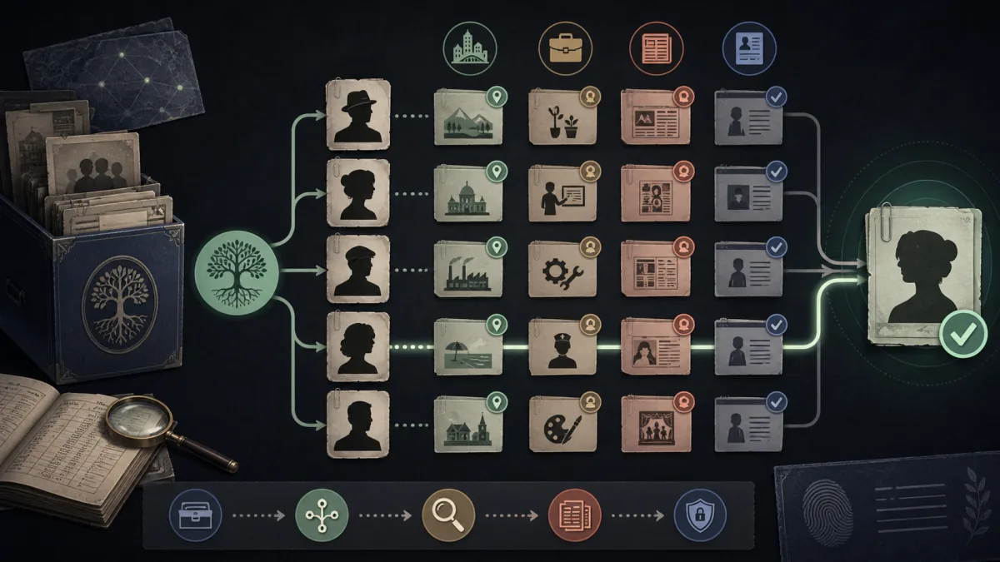

Поиск человека по фамилии: как проверить совпадение
Одна фамилия редко позволяет надёжно установить личность. Добавьте имя и контекст, сопоставьте несколько открытых признаков и подтвердите результат по первоисточнику.
Открыть в Telegram →
Алгоритм поиска
1
Сформулируйте запрос
Соедините фамилию с именем, регионом или публичной организацией.
2
Соберите совпадения
Используйте открытые страницы как подсказки, а не как доказательство.
3
Сверьте источник
Проверьте дату, биографию и контекст на исходной странице.
4
Остановитесь вовремя
Не ищите закрытые контакты и не используйте данные для давления.